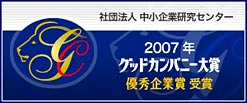

- Top Message
- Corporate Philosophy
- Company Profile & History
- Access
(UK Office) - Environmental Policy
Home > About FUKUI > Company Profile & History
Company Profile
FUKUI SEISAKUSHO CO., LTD. is a specialist manufacturer of safety and pressure relief valves, established in Japan in 1936. Our UK office supports customers across the United Kingdom and Europe with product information, technical guidance and sales enquiries.
| Company Name | FUKUI SEISAKUSHO CO., LTD. | |
|---|---|---|
| Establishment | 1936 | |
| Capital | 100 Million Yen | |
| Representative | Yo Fukui, President | |
| Employees | 200 ( As of April 1st, 2026 ) | |
| Annual Sales | 10,697 Million Yen ( March, 2026 ) | |
| Land and Building | Land 15,000 ㎡ Building 7,800 ㎡ |
|
| Products | Safety Valves | |
| Address | UK Office | 20 Pendwyallt Road BURWELL CB5 4WW E-mail : cchew@fukui-seisakusho.co.uk (Carl D. Chew) E-mail : sales@fukui-seisakusho.co.uk |
History
▼Located "Osaka Itachibori" office in 1950 |
1936 |
|---|---|
| Established. The Founder, Kiyokazu Fukui started to manufacture mainly safety valves and Water Gauges | |
| 1948 | |
| Incorporated and re-established as FUKUI SEISAKUSHO CO., LTD. |
|
| 1952 | |
| FUKUI Safety Valve registered with the patent office. | |
▼Located "Osaka Imazato" headquarter factory in 1955 |
1971 |
| Invested by SBIC West Japan. Granted High Pressure Gas Control Law Approval by the MITI. |
|
| 1972 | |
| Head Office relocated and consolidated to Hirakata Plant. Supplied all safety valves for the Shell LNG Plant in Brunei. |
|
| 1977 | |
| Qualified the "V" and "UV" ASME Stamps, which have been continuously renewed until the present. | |
| 1992 | |
| Supplied Pilot Operated Safety Relief Valves for cargo tanks of LNG carriers ( classed by NK ). Accredited for the Certification under the international quality assurance standard ISO 9001. |
|
▼Safety valve for super critical boiler |
1998 |
| Development of safety valves and Electrically operated relief valves for supercritical boilers ( 32 MPa-class, 540°C ) completed | |
| 2001 | |
| Cerebrated 65th Anniversary Party. | |
| 2002 | |
Exhibited to GASTECH 2002 in Qatar. |
|
| 2003 | |
| Build the steam test facility ( 22MPa, 600°C ). Build the steam test chamber ( 1M3 and 5M3 ) |
|
| 2006 | |
| Completion of Construction for Building intended for manufacturing all-purpose safety valve in small size. | |
| 2007 | |
| We have been awarded "Good Company Award Corporate Excellence Prize" by The Medium and Small Business Research Institute.  |
|
|
▼IGC CODE revision conference
▼PCV Demonstration for super critical boiler |
2008 |
| Completion of Construction New Material Warehouse Supplied safety valves for Sakhalin Ⅱ LNG project ( SEIC ) |
|
| 2009 | |
| IGC CODE (International Code for The Construction and Equipment of Ships Carrying Liquefied Gases in Bulk) Revision conference was held at Our Company. | |
| 2010 | |
| Held the Demonstration of Power Actuated Control Valve and Safety Valve for Supercritical Power boiler | |
| 2011 | |
| Supplied Power Actuated Control Valves and Safety Valves for Indian and Egyptian Super Critical Power Boilers. Total 5 plant, 11 units. An order total of pilot operated safety valve for LNG ship cargo tanks became 300 ships. |
|
| 2013 | |
| Completion of the technical building and test facility for air and water. | |
▼World’s Largest VRV Demonstration for LNG Tank |
2014 |
| Held the demonstration of world’s largest Vacuum Relief Valve Supplied safety valves for Australian Ichthys LNG Project |
|
| 2015 | |
| Supplied safety valves for PETRONAS F-LNG topside & hull Supplied pilot operated safety valves for LNGC dual fuel engine(ME-GI) to SHELL |
|
| 2016 | |
| Established After Sales Management Department Aiming to strengthen our domestic and overseas after sales market network strongly |
|
| 2018 | |
| Developed JK-3, jack-up test measuring apparatus designed for safety valve in power plant Certified ISO45001 (OH&S Management System) |
|
| 2019 | |
| Supplied safety valves for the world’s largest gas field Coral FLNG in Mozambique Supplied safety valves for the world’s first liquid hydrogen carrier, SUISO FRONTIER. |
|
| 2022 | |
| Developed the world’s first safety valves for CCS-LCO2 Carrier use Awarded safety valves for LCO2 carrier for the world’s first commercial scale CCS Northern Lights project |
|
| 2023 | |
| Awarded safety valves for the world’s largest FPSO, Exxon UARU Project Developed the world’s first safety valves for the large scale liquid hydrogen carrier Speaking engagement as a guest speaker on Japan Energy Summit 2023 speaking engagement as a guest speaker on LNG2023 |
|
▼World Hydrogen 2024 |
2024 |
| Took to the stage at World Hydrogen 2024, H2 Tech Insight as a guest speaker | |
| 2025 | |
| Awarded safety valves for the world’s largest LNG project, Qatar NFE NFS LNG Carriers 128 vessels Took to the stage at World Hydrogen 2025, H2 Tech Insight, as a guest speaker for the second consecutive year. |